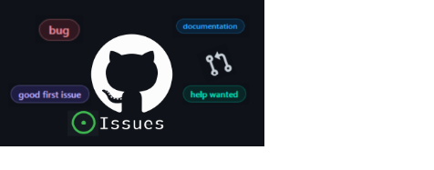
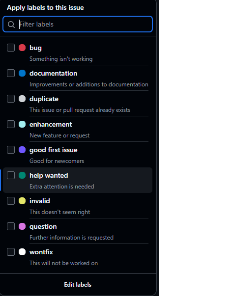

Do you ever feel like “What on earth is this open source? Do I have enough knowledge to contribute?
It's so confusing, how will I ever start contributing?” ?
Well that’s how most of us feel while getting started. Beginners often find it challenging to start
contributing to open source as they feel they don’t have high end coding skills, projects look
complicated and even the flow of github may seem overwhelming. Let me tell you that if you have the
will to start contributing, that’s all you need to get started.
A “Good first issue” is a label on Github for tasks that are beginner-friendly and easy enough for
your first contribution. It helps new contributors get started, makes open source welcoming and
helps build confidence to tackle hard tasks.
Here is what makes an issue a good first issue :
- Low complexity - small manageable change
- Well described - clear problem and expected outcome
- Low risk - unlikely to break core functionality
- Great for learning - helps understand the code
So examples of such issues are fixing typos, improving comments, documentation or renaming
variables.
The Hunt for Good first issues:
Finding the right issues not only reduces confusion but also
increases the chances of the PR getting accepted. To find good first issues start with the label,
github projects with beginner tasks have tags like good first issue, easy, beginner, starter etc.
Next look for repositories that have a clear readme and are recently active. Read the issue
carefully and check the comments for helpful instructions. Start small, the first contributions need
not be anything impressive.

- Go to github.com and create an account.
- Click on Issues
- Search for label:”good first issue”
- Choose a project
- Click on the repository name and read the README file
- Click fork
- Click edit in file and make a small change, it may be fixing a typo or adding comments
- Commit your changes
- Click Create Pull Request and explain your change
- Submit
- Wait for review

Congratulations you have made your first contribution!
Contributing to open source helps you apply classroom knowledge to practical projects used by people worldwide. It builds problem-solving skills, improves collaboration, and gives you hands-on experience that textbooks alone cannot provide. Even small contributions play an important role in keeping open-source projects active and improving the tools we use every day.
These early contributions also open doors to well-known programs such as GirlScript Summer of Code (GSSoC) and Hacktoberfest, where consistent contributions are encouraged and rewarded. Participating in such programs not only strengthens your GitHub profile but also boosts your confidence and visibility as an aspiring engineer.
Every experienced developer once made their first contribution. Yours might be a simple documentation update or a small bug fix, but it represents the beginning of a meaningful learning journey.
So don’t wait to feel fully prepared. Start hunting good first issues, make your first contribution.